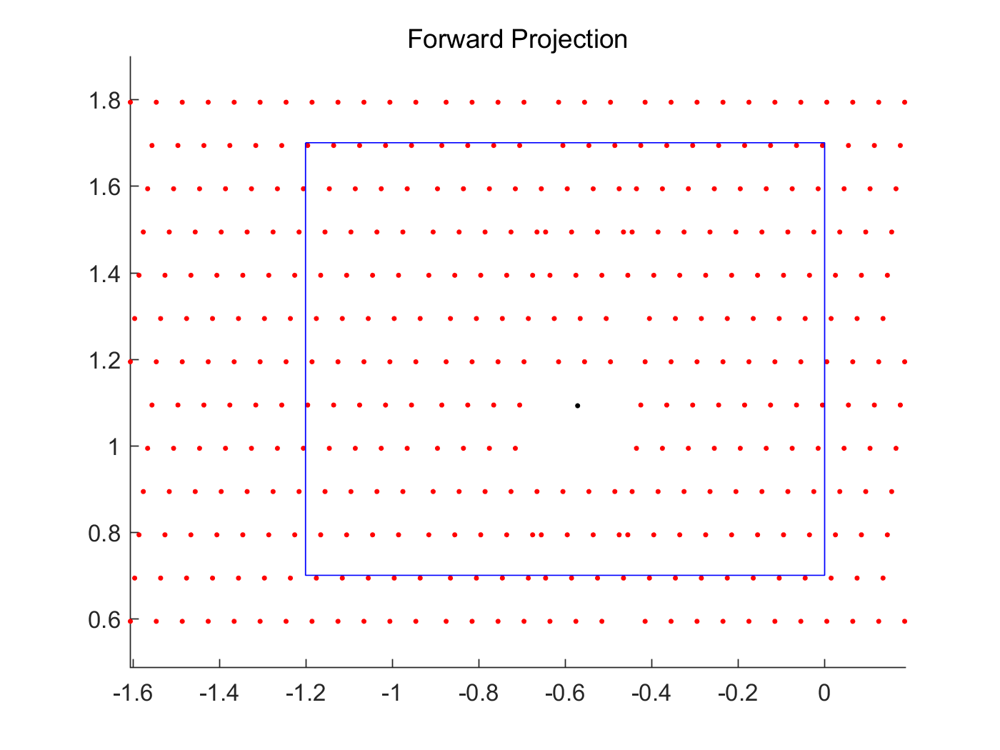
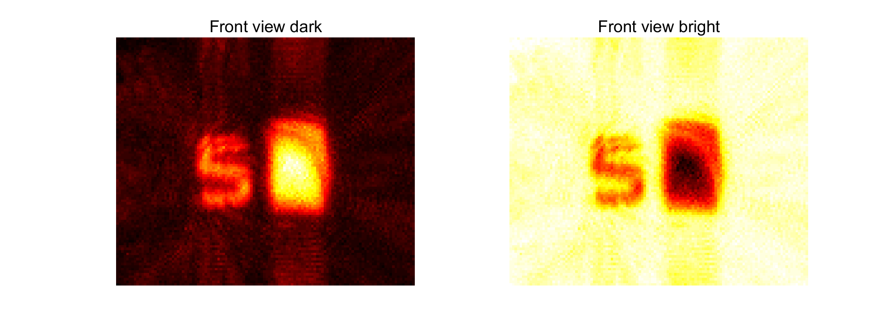
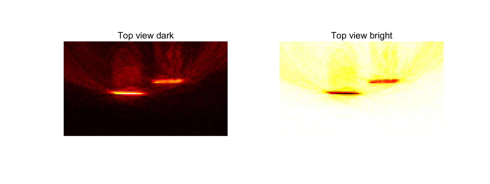
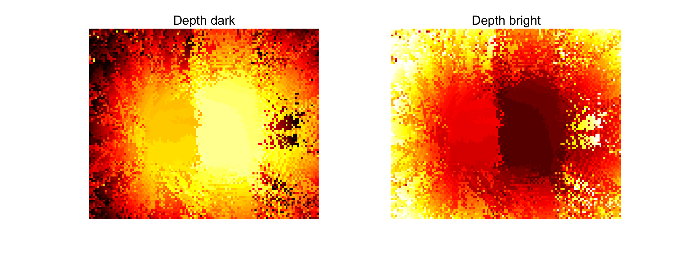

Contents
clear close all clc mex backproject_fast.cpp; % loading dataset data_str = ['./data/']; data_str = [data_str 'data.mat']; load(data_str); % Reconstruction volume corner points, unit meter minimalpos = [-1.2, 0.7, 0.5]; maximalpos = [ 0.0, 1.7, 1.2]; % reconstruction voxel resolution, unit meter gridsize = 0.01;
使用 'MinGW64 Compiler (C++)' 编译。 MEX 已成功完成。
backprojection
dataset.data = dataset.data(:,:,1 : 30000); % get rid of last several temporal bins, do not comment out this [pts, pixels] = prep(dataset,minimalpos,maximalpos,gridsize);%里面有forwardprojection bpinput = backprojectprep(dataset, pts); % Backproject tic Wraw = backproject_fast(double(bpinput.data), double(bpinput.laserPos), ... double(bpinput.pts), double(bpinput.cameraPos), ... double(bpinput.laserOrigin), double(bpinput.cameraOrigin),... double(dataset.deltat), double(dataset.t0), double(bpinput.laserNorm), double(bpinput.cameraNorm)); toc px=pixels(1); py=pixels(2); pz=pixels(3); W = reshape(Wraw,[pz, py, px]);
nlasers: 382 nvoxels: 840000 nx: 1 nt: 30000 tpp: 0.001200 shift: -6.597800 First voxel: -1.200000 0.700000 0.500000 Laser cop: 0.790000 1.030000 0.950000 cameranorm: 1.000000 1.000000 1.000000 0 percent done 10 percent done 20 percent done 30 percent done 40 percent done 50 percent done 60 percent done 70 percent done 80 percent done 90 percent done 100 percent done 时间已过 15.675002 秒。
FBP
Filter in space (nullified)
fw = nfbp(W,'laplacian',5); % Maximum projection visualization v_max_FBP;
警告: 未来的版本中将会删除 NARGCHK。请改用 NARGINCHK 或 NARGOUTCHK。  